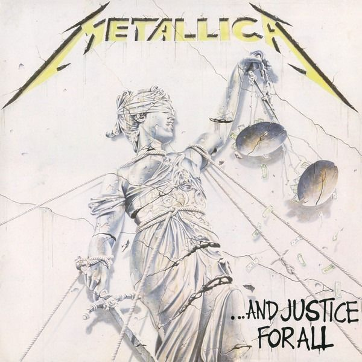

…And Justice for All
…And Justice for All est le quatrième album studio du groupe de thrash metal Metallica sorti le 25 août 1988 par Elektra Records. Le titre de l'album est une allusion aux quatre derniers mots du serment d'allégeance au drapeau des États-Unis. Les chansons de …And Justice For All ont pour thèmes la douleur (Harvester of Sorrow), l'injustice (…And Justice for All), la folie (The Frayed Ends of Sanity) et la mort (To Live Is to Die). Cet album a été composé à la suite du décès de Cliff Burton qui sera remplacé par Jason Newsted, ancien bassiste du groupe Flotsam and Jetsam. Ce sera la troisième meilleure vente (19 millions d'exemplaires) après les albums Master of Puppets (23 millions d'exemplaires, 1986) et Metallica (25 millions d'exemplaires, 1991). L'album marque l'entrée du bassiste Jason Newsted. Ce dernier est d'ailleurs inaudible sur l'album, il est comme "censuré", mais ce défaut sera corrigé sur le Black Album. Un fan bassiste enregistre sa propre version en 2007 et l'appelle …And Justice for Jason. L'album est nommé en 1988 pour le Grammy Award du meilleur album de hard rock, finalement remporté par Crest of a Knave du groupe de rock progressif Jethro Tull. L'album est cité dans l'ouvrage de référence de Robert Dimery « 1001 albums qu'il faut avoir écoutés dans sa vie4 ».
